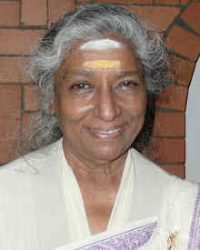
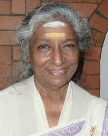
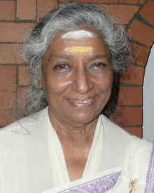

.jpg) 

एडावलेठ कक्कट जानकी अम्माल (अंग्रेज़ी: Edavaleth Kakkat Janaki Ammal) (१८९७-१९८४) भारत की एक महिला वैज्ञानिक थीं। अम्माल एक ख्यातिनाम वनस्पति और कोशिका वैज्ञानिक थीं जिन्होंने आनुवांशिकी, उद्विकास, वानस्पतिक भूगोल और नृजातीय वानस्पतिकी के क्षेत्र में उल्लेखनीय योगदान दिया। पद्म श्री से सम्मानित जानकी अम्माल भारतीय विज्ञान अकादमी की संस्थापक फेलो रहीं हैं।[1]
जानकी अम्माल का जन्म केरल के तेल्लीचेरी में वर्ष १८९७ में हुआ। एक सुसंस्कृत मध्यवर्गीय परिवार में जन्मी अम्माल के पिता तत्कालीन मद्रास सूबे में उप-न्यायाधीश थे। अम्माल के छः भाई और पाँच बहनें थीं। तेल्लीचेरी में आरंभिक शिक्षा के बाद उच्च शिक्षा के लिए अम्माल मद्रास चली गयीं जहाँ उन्होंने क्वींस मेरी'ज़ कॉलेज से स्नातक की और १९२१ में प्रेसीडेन्सी कॉलेज से ऑनर्स की उपाधि अर्जित की।[2] manali
अम्माल ने वीमेन्स क्रिश्चियन कॉलेज, मद्रास में पढ़ाया। वे मिशिगन विश्वविद्यालय, अमेरिका में एक बार्बर स्कॉलर के तौर पर कुछ समय तक के लिए रहीं जहाँ से उन्होंने १९२५ में अपनी स्नातकोत्तर की उपाधि प्राप्त की। भारत वापसी के पश्चात उन्होंने वी॰क्रि॰कॉ॰ में पढ़ाना जारी रखा। अम्माल, पहले ओरिएंटल बार्बर फेलो के तौर पर, पुनः मिशिगन चली गयीं जहाँ १९३१ में उन्होंने डी॰एससी॰ की उपाधि प्राप्त की। वे वानस्पतिकी की प्रोफेसर के रूप में लौटीं और महाराजा कॉलेज ऑफ साईंस, त्रिवेन्द्रम में १९३० से १९३४ तक पढ़ाया।

अम्माल को १९३५ में भारतीय विज्ञान अकादमी का तथा १९५७ में भारतीय राष्ट्रीय विज्ञान अकादमी का फेलो चुना गया। मिशिगन विश्वविद्यालय ने १९५६ में उन्हें एलएल॰डी॰ की मानद उपाधि प्रदान की। भारत सरकार ने १९५७ में उन्हें पद्म श्री से सम्मानित किया।[3] २००० में भारत सरकार के पर्यावरण और वन मंत्रालय ने उनके नाम पर वर्गीकरण विज्ञान के क्षेत्र में राष्ट्रीय पुरस्कार संस्थापित किया।
C.V, Subramanyan. "Janaki Ammal" (PDF). Indian Association of Scientists. मूल से 26 दिसंबर 2011 को पुरालेखित (PDF). अभिगमन तिथि १४ सितम्बर २0१३.
Subramanian, C V. "Edavaleth Kakkat Janaki Ammal — IAS Women in Science" (PDF). Indian Academy of Sciences. मूल से 26 दिसंबर 2011 को पुरालेखित (PDF). अभिगमन तिथि १४ सितम्बर २0१३.
"Padma Shri" (PDF). Padma Shri. 2015. मूल से 15 नवंबर 2014 को पुरालेखित (PDF). अभिगमन तिथि June 23, 2015.
S Kedharnath, Edavaleth Kakkat Janaki Ammal (1897–1984), Biographical Memoirs of Fellows of the Indian National Science Academy, 13, pp. 90–101, with portrait (1988)।
P Maheshwari and R N Kapil, Fifty Years of Science in India. Progress of Botany, भारतn Science Congress Association, Calcutta, pp. 110, 118 (1963)।